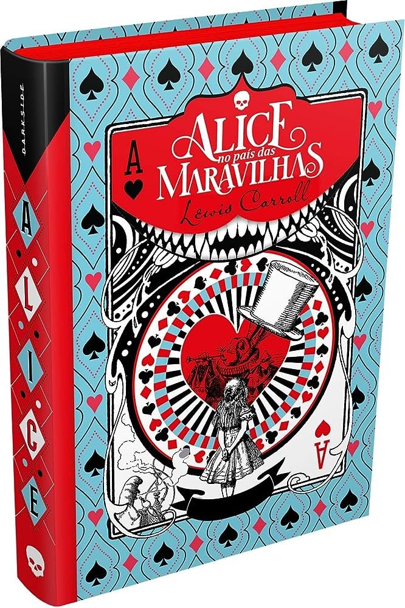

1984 - George Orwell

Sinopse: Exatamente como intitula o livro, a história passa-se em 1984. A narrativa revela um futuro distópico em que o Estado é extremamente autoritário e impõe um regime de vigilância sobre a sociedade. O romance acontece na cidade que um dia fora Londres, na fictícia Oceânia(todas as Américas agora formam uma só, a Oceania), território dominado pela repressão e pelo medo.
Alice no País das Maravilhas - Lewis Carroll
Sinopse: Ainda garotinha, Alice Kingsleigh visitou um lugar mágico pela primeira vez e não tinha mais lembranças sobre o local a não ser em seus sonhos. Em uma festa da nobreza, a jovem vê um coelho branco. Alice o segue e cai em um buraco, indo parar em um mundo estranho: o País das Maravilhas. Lá, ela reencontra personagens que estavam guardados em sua memória através dos sonhos.
O Conto da Aia - Margaret Atwood

Sinopse: Trata-se de um romance distópico passado nos Estados Unidos num contexto bastante catastrófico: um grupo de fundamentalistas religiosos consegue derrubar o governo e assume o poder fundando a República de Gilead.
Crime e Castigo - Fiódor Dostoiévski

Sinopse: Neste livro, Raskólnikov, um jovem estudante, pobre e desesperado, perambula pelas ruas de São Petersburgo até cometer um crime que tentará justificar por uma teoria: grandes homens, como César ou Napoleão, foram assassinos absolvidos pela História.
A Divina Comédia - Dante Alighieri

Sinopse: O livro relata a viagem de Dante ao Inferno,ao Purgatório e ao Paraíso. O poeta Virgílio o acompanha tanto ao inferno – um vale nas entranhas da terra – como ao Purgatório, local onde as almas se purificam dos pecados capitais. Beatriz, a musa de Dante, o conduz ao Paraíso, formado por nove céus.
Dom Quixote - Miguel de Cervantes

Sinopse: A obra narra as aventuras e desventuras de Dom Quixote, um homem de meia idade que resolveu se tornar cavaleiro andante depois de ler muitos romances de cavalaria. Providenciando cavalo e armadura, resolve lutar para provar seu amor por Dulcineia de Toboso, uma mulher imaginária.
Eichmann em Jerusalém - Hannah Arendt

Sinopse: Numa mescla brilhante de jornalismo político e reflexão filosófica, Arendt acompanha o julgamento do nazista Adolf Eichmann e elabora o conceito de "banalidade do mal", ameaça maior às sociedades democráticas.
Hamlet - Willian Shakespeare

Sinopse: Hamlet, de William Shakespeare, é uma obra clássica permanentemente atual pela força com que trata de problemas fundamentais da condição humana. A obsessão de uma vingança onde a dúvida e o desespero concentrados nos monólogos do príncipe Hamlet adquirem uma impressionante dimensão trágica.
O Senhor dos Anéis - J R. R. Tolkien
Sinopse: Em uma terra fantástica e única, um hobbit recebe de presente de seu tio um anel mágico e maligno que precisa ser destruído antes que caia nas mãos do mal. Para isso, o hobbit Frodo tem um caminho árduo pela frente, onde encontra perigo, medo e seres bizarros. Ao seu lado para o cumprimento desta jornada, ele aos poucos pode contar com outros hobbits, um elfo, um anão, dois humanos e um mago, totalizando nove seres que formam a Sociedade do Anel.
Livros Brasileiros
Memórias Póstumas de Brás Cubas - Machado de Assis

Sinopse: Após ter morrido, em pleno ano de 1869, Brás Cubas decide por narrar sua história e revisitar os fatos mais importantes de sua vida, a fim de se distrair na eternidade. A partir de então ele relembra de amigos como Quincas Borba, de sua displicente formação acadêmica em Portugal, dos amores de sua vida e ainda do privilégio que teve de nunca ter precisado trabalhar em sua vida.
Capitães da Areia - Jorge Amado
Sinopse: Pedro Bala, Professor, Gato, Sem Pernas e Boa Vida são adolescentes abandonados por suas famílias, que crescem nas ruas de Salvador e vivem em comunidade no Trapiche. Eles praticam uma série de assaltos e são constantemente perseguidos pela polícia. Um dia, Professor conhece Dora e seu irmão Zé Fuinha e os leva até o Trapiche, o que desencadeia a excitação dos demais garotos, que não estão acostumados à presença de uma mulher no local. Aos poucos, nasce o afeto entre o líder do grupo e a jovem.
Macunaíma - Mário de Andrade
Sinopse: As aventuras de Macunaíma, o anti-herói preguiçoso e sem caráter. Ele nasce negro no sertão, mas vira branco, vai para a cidade com os irmãos e se envolve com prostitutas, guerrilheiras e enfrenta todo tipo de gente em sua jornada.
O Romanceiro da Inconfidência - Cecília Meireles
Sinopse: (Este é um livro de poemas e a sinopse a seguir é do poema de mesmo título do livro) Inspirada por uma visita a Ouro Preto, Cecília Meireles compôs esse poema de temática social, retratando a luta pela liberdade no Brasil do século XVIII durante o episódio da Inconfidência Mineira e incorporando elementos dramáticos, épicos e líricos.
Vidas Secas - Graciliano Ramos

Sinopse: Publicado pela primeira vez em 1938, o aclamado livro retrata a vida miserável de uma familia de retirantes em sua peregrinação pelo sertão nordestino. Se tornando uma das obras-símbolo do modernismo literário brasileiro, Vidas secas é um retrato atual, emocionante e cruelmente verdadeiro sobre o Brasil.